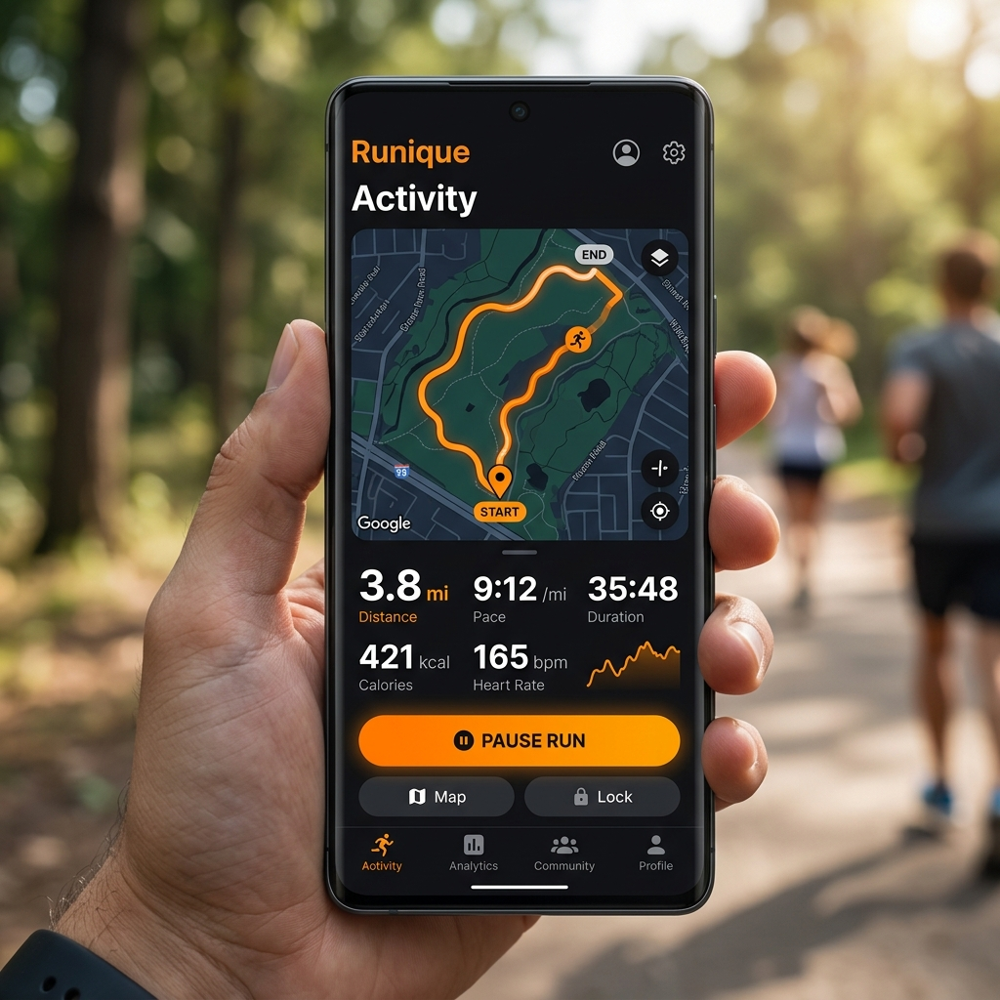

Runique Fitness Tracker
تطبيق صحي متزامن لأجهزة Android الذكية و Wear OS، يقدم متابعة رياضية دقيقة وعالية الجودة من خلال نظام تخزين بيانات يعمل حتى دون إنترنت.

نظرة عامة
Runique هو همزة الوصل لتطوير تطبيقات متزامنة ذكية عبر ربط تطبيقات الأجهزة الذكية القابلة للارتداء ومساعد أجهزة الاتصالات بآليات متكاملة لمقاييس الصحة المعقدة. المشروع يوضح كفائة الاستشعار الرقمية المكانية والأنظمة الحيوية لخرائط Google و Health Services بشكل مستقر على Android.
التحدي
إنشاء تطبيقات للياقة البدنية يتطلب دقة مطلقة؛ حيث أن تأثيرات إخفاق أو إنقطاعات الشبكة المفاجئة مع مشكلات تحسينات استهلاك البطارية (Doze Mode) غالبا ما تؤثر بوضوح على معالجات تدفق البيانات ومشاكل المزامنة بين الأجهزة والهواتف المدمجة.
يهدف البرنامج إلى ضمان تجربة استشعار فعلية لخرائط نظام تحديد المواقع (GPS) بينما تتم تغذية قواعد الحفظ المحلية بالمقاييس البيومترية المعقدة في نطاقات الانقطاع الكلي للإتصالات بالشبكة بشكل متسق بدون أي استنزاف لا مبرر له لاستهلاك البطاريات.
الهيكلية المعمارية والقرارات التقنية
لضمان تدفق ممتاز للبيانات، تم تنظيم مشروع Runique وفقاً لوحدات منفصلة (المصادقة، الجري، التحليلات الرياضية، الساعات الذكية)، جميعها مهيكلة بناءً على أسلوب "العمارة النظيفة" (Clean Architecture).
تفعيل وتحسين مسار التدوير والمزامنة
- وحدات مبرمجة لميزات متكررة ديناميكيا: تم الاعتماد على مقاييس أدوات الـ Gradle لتعزيز تقسيم الموارد وأداء عمليات التجميع والبناء والتسليم التقني للمنصات الرقمية المختلفه.
- نظام الـ Offline-First القوي: إنشاء آلية للتخزين كمرجع للبيانات من قراءآت المقاييس البيومترية باستخدام الـ Wear OS Health API وتسجيل الدخول لقواعد البيانات لتقنين الضغط عن الشبكات بشكل استغلالي مدرك وتلقائي.
- استغلال Turbine و Coroutines: مع ارتفاع التردد الدائم للموقع المكانية، عملت دوال Flow و Turbine لاختبار تدفق التغييرات المتكررة للواجهة كشكل من أشكال معالجة الأعطال بشكل وقائي من خلال الأنابيب الآلية التقنية.
مقاربة البناء وتنوع بيئة المنصات
وبدلاً عن التطوير المنفصل والمجزأ للمنصات المنفردة وتوريث الدلالات الرياضية والتسويقية على الأطر المختلفه، قمنا بتنظيم أدوات التصميم وربطها (Material 3) للاجهزه الذكيه في مقابل أدوات مراجعات Wear OS.
التأثير والنتائج
- تم تحقيق تزامن وموثوقية حالة الاستقرار (Seamless State Syncing) بصورة مبهرة لآداء استثنائي بأقل من ثانية وبدقّة وتناغم مثالي.
- ضمان موثوق هيكلي صلب وقوي عبر العمليات المعقدة لأنظمة تتبع مسار نظام تحديد المواقع العالمي (GPS) واستبعاد المشكلات التشغيلية (Doze mode) لأجهزة الإنقطاعات العالية.
- تم تمكين مجاري النشر والتحديث السريع من خلال إنشاء وقياس الأدوات النمطية المبتكرة لمهندسي البرمجيات وتقنين أدوات Gradle لمراجعتها آليا وتأمين الموثوقية.